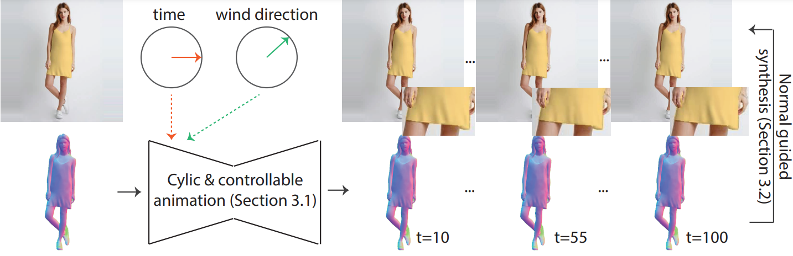
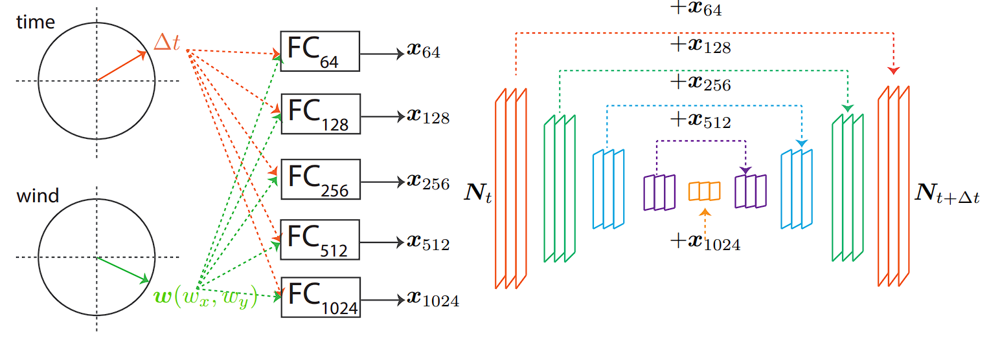
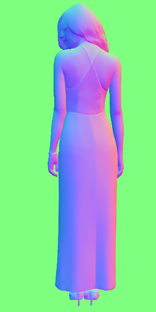

Abstract
Human Cinemegraph Generation
Methodology
We propose solving this problem in normal space. By doing so, it is possible to tackle the problem without real data.
Pipeline
Problem Decomposition
Here we detail how we decompose the problem to approach it through the normal space.
Stage 1: Normal estimation
Stage 2: Cyclic and Controllable Animation (Sec 3.1)
Wind Cyclic UNet
Stage 3: Normal Guided Synthesis (Sec. 3.2)
Input

Normal map
Animation
Shading
Reflectance
RGB
Synthetic Data
We train our Cyclic and Controllable UNet using only synthetic data.
Comparison
We compare results obtained with a state-of-the-art method and variations of our approach.
Wind Control
We illustrate here the possibility of controlling the generated video with the wind direction.
Qualitative results
More results
Failures
BibTeX
[TBD]